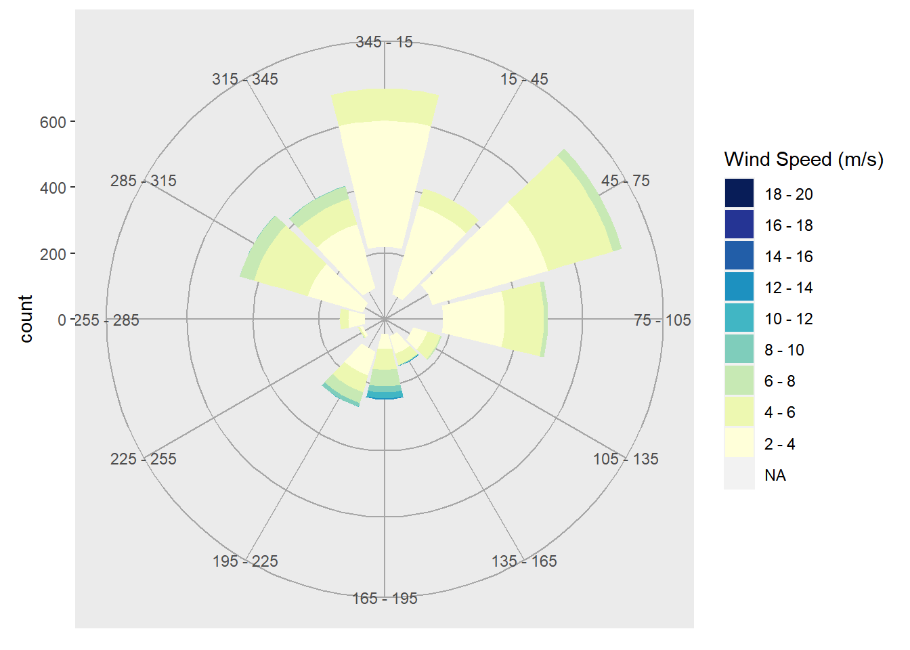
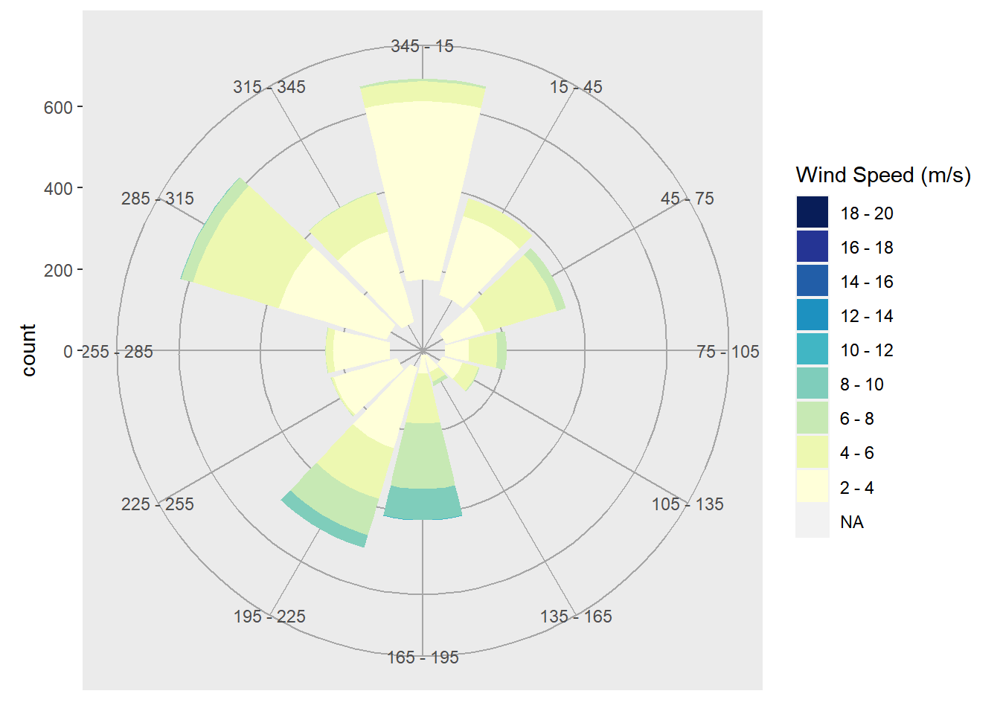
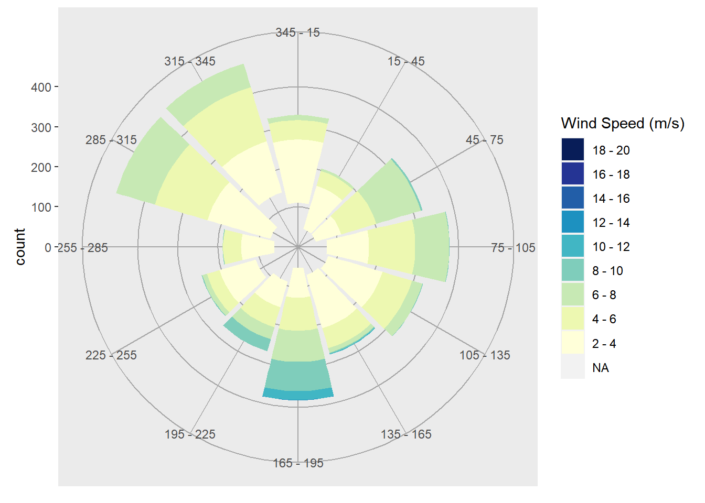

Chapter 4 Windrose December 2020 to March 2021
#wind17 <- buoy(dataset='cwind',buoyid='CDRF1', datatype='c', year=2017)
#wind18 <- buoy(dataset='cwind',buoyid='CDRF1', datatype='c', year=2018)
#wind19 <- buoy(dataset='cwind',buoyid='CDRF1', datatype='c', year=2019)
wind20 <- buoy(dataset='cwind',buoyid='CDRF1', datatype='c', year=2020)
wind21 <- buoy(dataset='cwind',buoyid='CDRF1', datatype='c', year=2021)
wind <- rbind(wind20$data, wind21$data) %>% dplyr::distinct()
# Shrink the wind table, and convert the format of time
wind$time <- ymd_hms(wind$time)
plot.windrose <- function(data,
spd,
dir,
spdres = 2,
dirres = 30,
spdmin = 2,
spdmax = 20,
spdseq = NULL,
palette = "YlGnBu",
countmax = NA,
debug = 0){
# Look to see what data was passed in to the function
if (is.numeric(spd) & is.numeric(dir)){
# assume that we've been given vectors of the speed and direction vectors
data <- data.frame(spd = spd,
dir = dir)
spd = "spd"
dir = "dir"
} else if (exists("data")){
# Assume that we've been given a data frame, and the name of the speed
# and direction columns. This is the format we want for later use.
}
# Tidy up input data ----
n.in <- NROW(data)
dnu <- (is.na(data[[spd]]) | is.na(data[[dir]]))
data[[spd]][dnu] <- NA
data[[dir]][dnu] <- NA
# figure out the wind speed bins ----
if (missing(spdseq)){
spdseq <- seq(spdmin,spdmax,spdres)
} else {
if (debug >0){
cat("Using custom speed bins \n")
}
}
# get some information about the number of bins, etc.
n.spd.seq <- length(spdseq)
n.colors.in.range <- n.spd.seq - 1
# create the color map
spd.colors <- colorRampPalette(brewer.pal(min(max(3,
n.colors.in.range),
min(9,
n.colors.in.range)),
palette))(n.colors.in.range)
if (max(data[[spd]],na.rm = TRUE) > spdmax){
spd.breaks <- c(spdseq,
max(data[[spd]],na.rm = TRUE))
spd.labels <- c(paste(c(spdseq[1:n.spd.seq-1]),
'-',
c(spdseq[2:n.spd.seq])),
paste(spdmax,
"-",
max(data[[spd]],na.rm = TRUE)))
spd.colors <- c(spd.colors, "grey50")
} else{
spd.breaks <- spdseq
spd.labels <- paste(c(spdseq[1:n.spd.seq-1]),
'-',
c(spdseq[2:n.spd.seq]))
}
data$spd.binned <- cut(x = data[[spd]],
breaks = spd.breaks,
labels = spd.labels,
ordered_result = TRUE)
# clean up the data
data. <- na.omit(data)
# figure out the wind direction bins
dir.breaks <- c(-dirres/2,
seq(dirres/2, 360-dirres/2, by = dirres),
360+dirres/2)
dir.labels <- c(paste(360-dirres/2,"-",dirres/2),
paste(seq(dirres/2, 360-3*dirres/2, by = dirres),
"-",
seq(3*dirres/2, 360-dirres/2, by = dirres)),
paste(360-dirres/2,"-",dirres/2))
# assign each wind direction to a bin
dir.binned <- cut(data[[dir]],
breaks = dir.breaks,
ordered_result = TRUE)
levels(dir.binned) <- dir.labels
data$dir.binned <- dir.binned
# Run debug if required ----
if (debug>0){
cat(dir.breaks,"\n")
cat(dir.labels,"\n")
cat(levels(dir.binned),"\n")
}
# deal with change in ordering introduced somewhere around version 2.2
if(packageVersion("ggplot2") > "2.2"){
cat("Hadley broke my code\n")
data$spd.binned = with(data, factor(spd.binned, levels = rev(levels(spd.binned))))
spd.colors = rev(spd.colors)
}
# create the plot ----
p.windrose <- ggplot(data = data,
aes(x = dir.binned,
fill = spd.binned)) +
geom_bar() +
scale_x_discrete(drop = FALSE,
labels = waiver()) +
coord_polar(start = -((dirres/2)/360) * 2*pi) +
scale_fill_manual(name = "Wind Speed (m/s)",
values = spd.colors,
drop = FALSE) +
#theme_bw() +
theme(axis.title.x = element_blank(),
#panel.border = element_rect(colour = "blank"),
panel.grid.major = element_line(colour="grey65"))
# adjust axes if required
if (!is.na(countmax)){
p.windrose <- p.windrose +
ylim(c(0,countmax))
}
# print the plot
print(p.windrose)
# return the handle to the wind rose
return(p.windrose)
}wind0 <- wind %>%
filter(time >= "2020-12-01 00:00:00" & time <= "2020-12-31 00:00:00") %>%
select(time, wind_spd, wind_dir)
wind1 <- wind %>%
filter(time >= "2021-01-01 00:00:00" & time <= "2021-01-31 00:00:00") %>%
select(time, wind_spd, wind_dir)
wind2 <- wind %>%
filter(time >= "2021-02-01 00:00:00" & time <= "2021-02-28 00:00:00") %>%
select(time, wind_spd, wind_dir)## Hadley broke my code

## Hadley broke my code

## Hadley broke my code